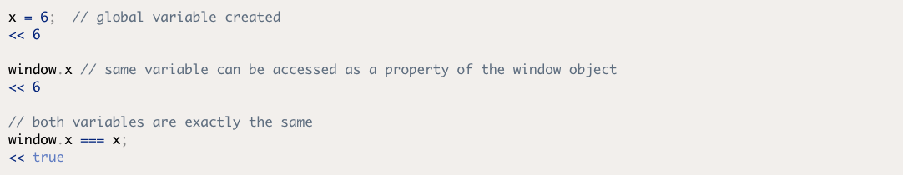
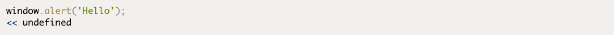
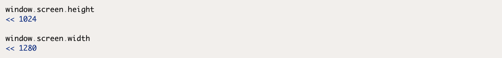
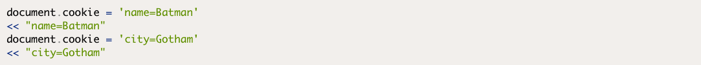
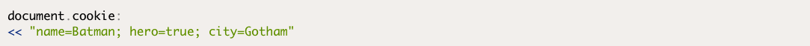
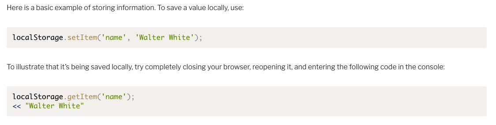
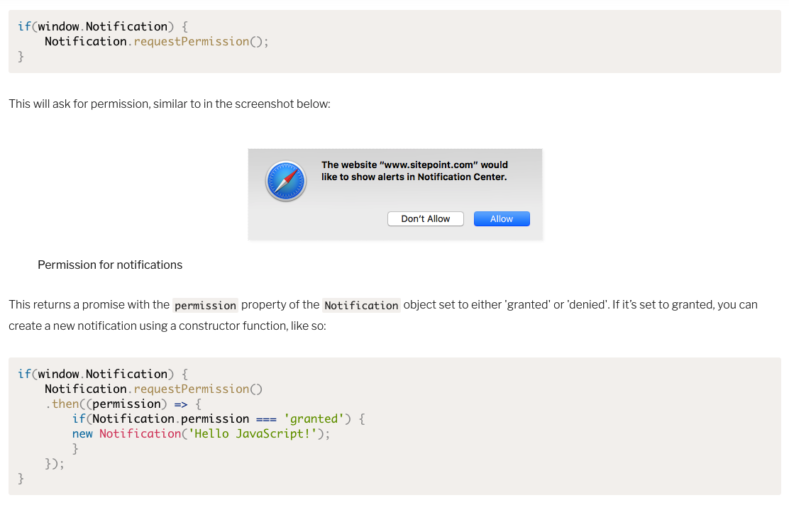
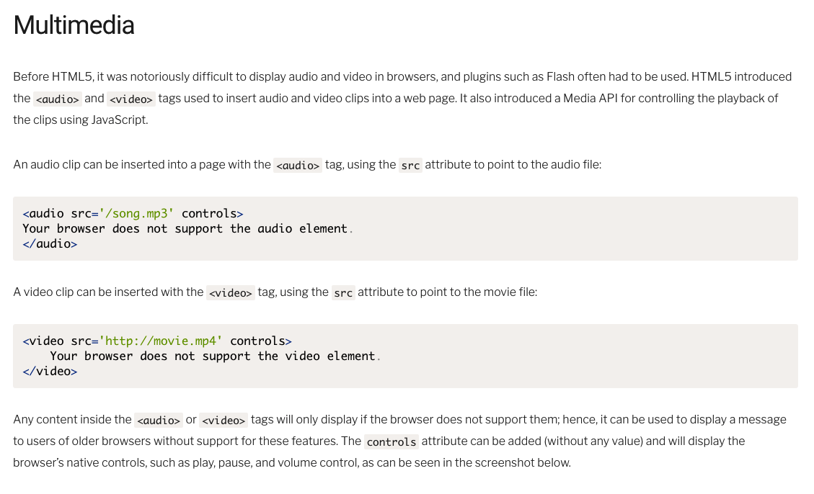

Readings
The Window Object
The Browser Object Model
The Browser Object Model (or BOM for short) is a collection of properties and methods that contain information about the browser and computer screen. For example, we can find out which browser is being used to view a page (though, this method is unreliable). We can also find out the dimensions of the screen it is viewed on, and which pages have been visited before the current page. It can also be used for the rather dubious practice of creating pop-up windows, if you’re into annoying your users.
Going Global
All the way back in Chapter 2, we introduced the concept of global variables. These are variables that are created without using the const , let or var keywords. Global variables can be accessed in all parts of the program.
Global variables are actual properties of a global object. In a browser environment, the global object is the window object. This means that any global variable created is actually a property of the window object, as can be seen in the example below:
Dialogs
The window.alert() method will pause the execution of the program and display a message in a dialog box. The message is provided as an argument to the method, and undefined is always returned:
Screen Information
The window.screen object contains information about the screen the browser is displayed on. You can find out the height and width of the screen in pixels using the height and width properties respectively:
The Document Object
Each window object contains a document object. This object has properties and methods that deal with the page that has been loaded into the window. In Chapter 6, we covered the Document Object Model and the properties and methods used to manipulate items on the page. The document object contains a few other methods that are worth looking at.
document.write()
Cookies
To create a cookie, you assign it to JavaScript’s “cookie jar”, using the document.cookie property, like so:
Changing Cookie Values
Reading Cookies
HTML5 Web Storage
The Web Storage API provides a key-value store on the client’s computer that is similar to using cookies but has fewer restrictions, more storage capacity, and is generally easier to use. This makes it perfect for storing information about users, as well as storing application-specific information that can then be used during future sessions.
Notifications
The Notification API allows you to show messages using the system's notifications. This is usually a popup in the corner of the screen, but it changes depending on the operating system. An advantage of using the system notification is that they will still be displayed even if the web page that calls them isn't the current tab.
Before you can send notifications, you need to get permission granted by the user. This can be achieved using the requestPermission() method of a Notification global object. To try this out, visit any website in your browser (https://sitepoint.comfor example), and enter the following code in the console:
